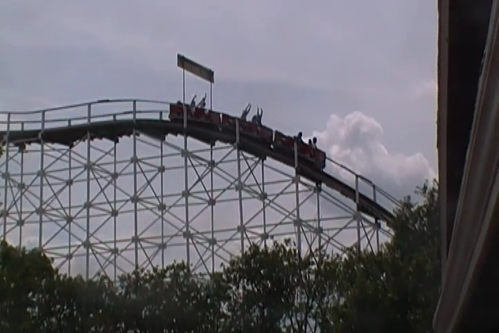
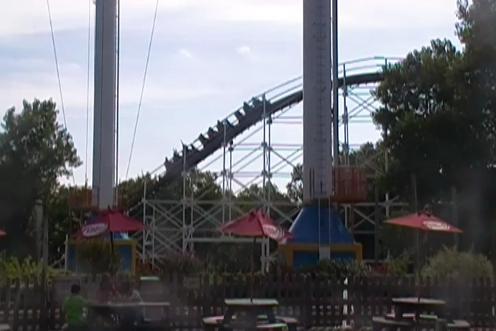

| |
Wildcat Review

We're here at Frontier City and todays ride we'll be reviewing is Wildcat. Once you get in the cars and pull down the lap bars and buckle the seatbelt, you're on your way. You roll around a turn and then head straight towards the lift hill. The lifthill gives you a nice view of the park as well as just the freeways and Oklahoma in general. We crest the top of the lifthill, head around a turn, and we come across a sign at the top of the first drop. "Point of No Return" with the best claws. Yep. The ride is about to begin. Like how they put that sign there. It's a nice little touch. And with that said, we're off. The first drop isn't that special, but it is a fun little first drop. We gain some speed and hopefully this'll really pan out as a fun ride. We then head up into a hill. Now let me be perfectly clear. This hill has NO airtime to it AT ALL. We just glide straight on through it. We lose a little speed, we gain some speed. Nothing special. However, there is one thing I like about the ride. The atmoshere. This ride is just BURIED in the trees. It's almost like there's this tunnel of trees. It's pretty damn cool. We rise up another hill, lose our speed, go through a slight turn, drop back down into the trees. We then head into a small little hill. There's not any airtime here, but at least we're keeping our speed and it's a little fun. We then head around this sort of turnaround which is by far the best part of the ride. It's fairly low to the ground, but we rise up and head through this sort of turnaround. And we not only maintain our speed, but there are actually a couple laterals here. Considering how up until now, the ride has been very forceless, this is a really nice surprise. I'm really starting to like the ride. Unfortunetly, it doesn't hold up as we head into another hill, don't get any airtime, and we head around a turn and through some straight track. Not that fun. Go around a small little dip above the trees. That's fun. Pop out of the trees and hit the brake run. LAME!!!! We then head down a small dip, go through some straight track, and rise up into the station. It's all over. And I know there's some disagreement, but I just do NOT like this ride. It's a cruiser snoozer. It's just a very boring layout. There's very little forces. Seriously, there's one section with laterals. That's it. It's got a bad layout. But with that said, it has a GREAT setting. I love the location of this ride. I love how it's buried and nestled within all the trees. It's pretty relaxing. So yeah. As a coaster, it's pretty dull. But it is a pretty ride. Just hope that all the trees are still there when you ride.
6/10
Location: Frontier City
Opened at Fairyland Park in 1967
Moved to Frontier City in 1991
Built by: National Amusement Devices Company
Last Ridden: July 21, 2013
Wildcat Photos



|